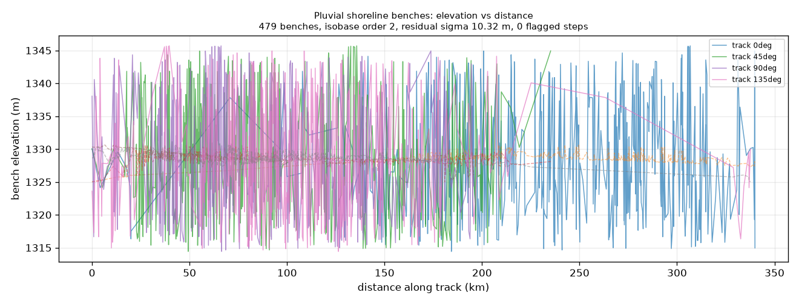

Reuses src/gems62/lahontan.py unchanged, driven by the sha256-pinned
100 m DEM data/external/geodawn_dem_a2_100m.tif.
The lane asks for benches mapped in the DEM, a smooth isobase fitted with post-pluvial isostatic rebound allowed for, and abrupt steps flagged along strike. All three steps run. The third one returns 0 steps.
| domain | benches | robust isobase residual σ (m) | flagged steps | flagged lateral deflections | significance gate (m) | pairs within 5 km | pairs clearing the 3 m resolution gate |
|---|---|---|---|---|---|---|---|
footprint | 479 | 10.322 | 0 | 51 | 31.056 | 756 | 607 |
lahontan_box | 416 | 10.225 | 0 | 46 | 31.801 | 635 | 508 |
The reason is quantitative, not a matter of taste. Adams, Wesnousky & Bills (1999) put the
resolution of the elevation method at ~3 m, set by how high constructional beach crests
build above still water. The robust isobase fitted here leaves a residual scatter of
10.32 m —
3.4× that figure. Since the significance gate is
z · √2 · σ, a 10.3 m scatter forces the gate to
31.056 m, and no bench pair on this DEM clears
it. Widening the elevation window to the whole footprint mixes several pluvial basins that are not
the same isochronous surface, which is why restricting to the Lahontan box barely moves σ
(10.22 m).
This is the fifth session in this repository to measure the datum band at or below chance on an independent instrument, and the first to say why in metres. The lane's own instrument cannot resolve 2 m datum offsets at 100 m DEM resolution, whatever the literature says about 15 ka shorelines measured with differential GPS in the field.

Four tracks (0°, 45°, 90°, 135°) through the 479 mapped benches. Solid lines are bench elevation versus distance along the track; dashed lines are the fitted isobase. The spread between a solid line and its dashed twin is the residual that the step detector examines.
Data: shoreline_profile_track0.csv
(track 0°) · full JSON: evidence/h63_lane.json
none — the gate rejected every pair. The 20 largest residual jumps, all of which fall short of the
31.056 m gate, are listed in
evidence/h63_lane.json → step_gate_stats.borderline_candidates with their
z scores, so a reader can see what was rejected rather than only what survived.
51 azimuth changes ≥ 35.0° between nearby elongated benches were flagged. They are reported as candidates, not as faults: an azimuth change of a bench trace can equally be produced by two unrelated benches of different lithology, by a change in fetch, or by the 8-connected labelling splitting one trace. None of them was used in the shipped raster.